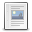

You are reading the family-friendly “Wholesome Cut” of the QKiSS website, and are about to switch to the “Director's Cut”.
The Director's Cut has no NSFW content, nor any blood or violence. But it is full of things very likely to make you feel sick and to pollute your mind, including but not limited to: emotional swearing, dark political jokes, strong opinions on all kinds of technologies and aesthetic tastes, and the rambling of the author, as long-winded and tiresome as this very warning, and annoying enough to make you want to shove a boiled egg into the author's mouth to shut them up.
Note that the Wholesome Cut does not keep you from understanding any feature of this project, nor any necessary technical information. The Director's Cut, on the other hand, may well cause you a variety of adverse effects, including but not limited to: anger or offense, mental impairment, epileptic seizures, permanent and irreversible bodily harm, and even the urge to start watching Teletubbies to forget everything you just read.
Persons without legal capacity or with limited legal capacity, persons aged 22 or under or 70 or over, persons with a history of high blood pressure or of cardiovascular or cerebrovascular disease, persons of a sensitive disposition, persons fond of persuading others to accept their own views, and persons who pick fights for fun must not continue.
The “Director's Cut” may well be harmful to the mental health of others, but leaving out the “Director's Cut” is harmful to the author's own mental health. Of two evils, the lesser is chosen: the author has therefore decided to protect their own sanity. Thank you for your understanding. The author has fulfilled the duty to inform.
The “Director's Cut” may well be harmful to the mental health of others, but leaving out the “Director's Cut” is harmful to the author's own mental health.
Of two evils, the lesser is chosen: the author has therefore decided to protect their own sanity. Thank you for your understanding.
The author has fulfilled the duty to inform.
By clicking the agree button below, you, the User, of sound mind and under no duress from anyone, voluntarily waive all rights to criticize any sentence or opinion you will read on the QKiSS website from now on, and voluntarily waive all legal claims against the author of QKiSS for any negative consequences of reading it; nor shall you harass the original author or damage this project in any way, including but not limited to boycotts, harassment, attacks, verbal abuse and sabotage.

Turn back while you still can: you can still change your mind. Please think of your family, please think of your pets, please think of your health, please think of the side project you haven't finished yet, please think of the pull request you haven't merged yet, please think of the issues you haven't closed yet. There is no need to take such a risk in life.
Once again: the Wholesome Cut does not keep you from learning any necessary technical information about QKiSS.
The terms could not be loaded. Check your connection, then try again.
You may click “I have actually read, and fully agree to, all of the provisions above” only after reading these Terms in full.
These are the Additional Articles prescribed under Article 12, Paragraph 1 of the Terms, in accordance with ISEKAI 62443-4-2:2026 § 7.4, and as required by the Order of the Town Office of Axel, Kingdom of Belzerg (Ref. STARBURST-STREAM/0x00000C8763). Please read them carefully:
0x00000C8763
You may click “I have actually read, and fully agree to, all of the provisions above” only after reading these Additional Articles in full.